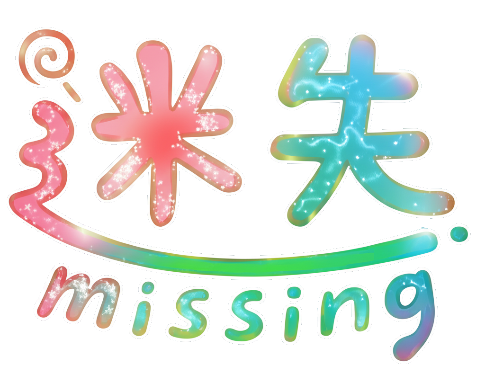
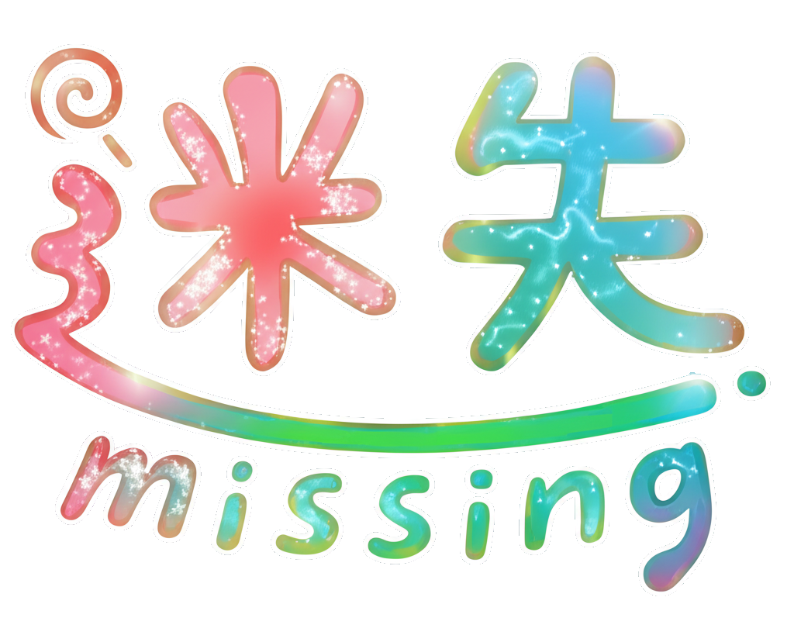
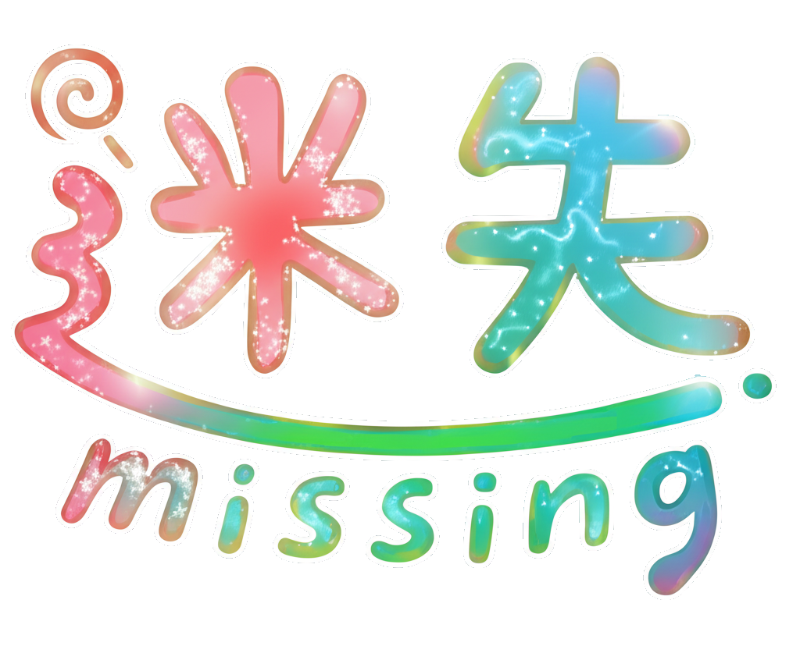
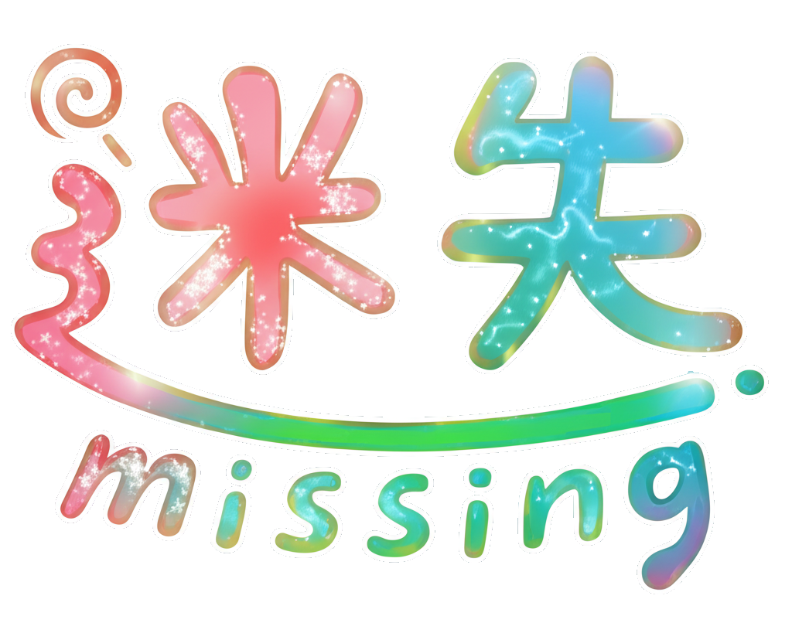

「迷失」與「Missing」：瑪朵在糖果世界中遺失了自我與記憶。
這個世界充滿虛假的甜蜜，正如糖果背後的危害，讓人沉溺卻危險。
陷入昏迷的甜點師。在意識的糖果世界中，她必須蒐集記憶碎片，找回生存的方向與希望。
瑪朵的指引者。 在神祕的王國中守護瑪朵，引導她避開虛假的誘惑，一步步找回真實的自我。

隨著記憶碎片集齊而獲得的強力武器。看似甜蜜的外表下，隱藏著擊碎虛假幻象的力量。
每收集一個碎片，就能蓋下一枚印章。這不僅是故事推進的關鍵，還能解鎖二段跳、衝刺等新技能。
★ 打怪掉落的「奶油能量」可累積恢復血量或發動大招！
當最後的記憶碎片集齊，你將面對「內心的自我」BOSS。
留在糖果王國的沉睡甜蜜？
或者
勇敢睜開眼面對殘酷現實？